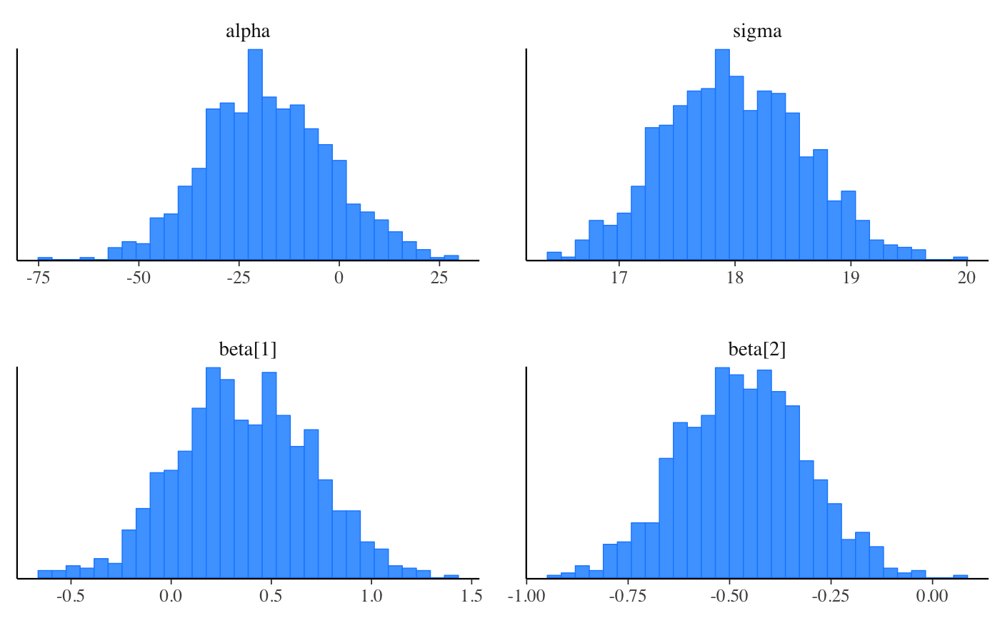
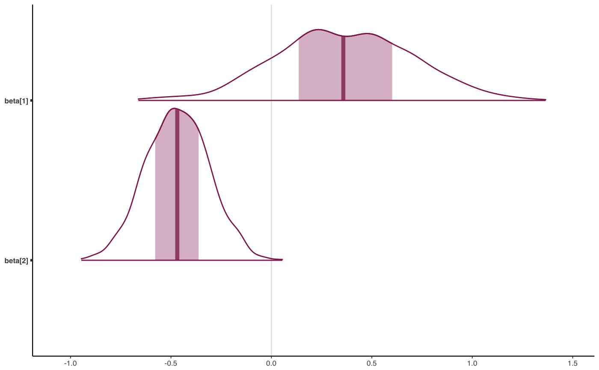
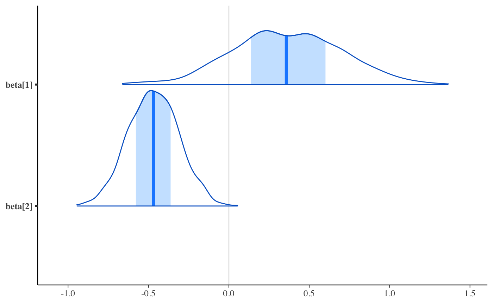
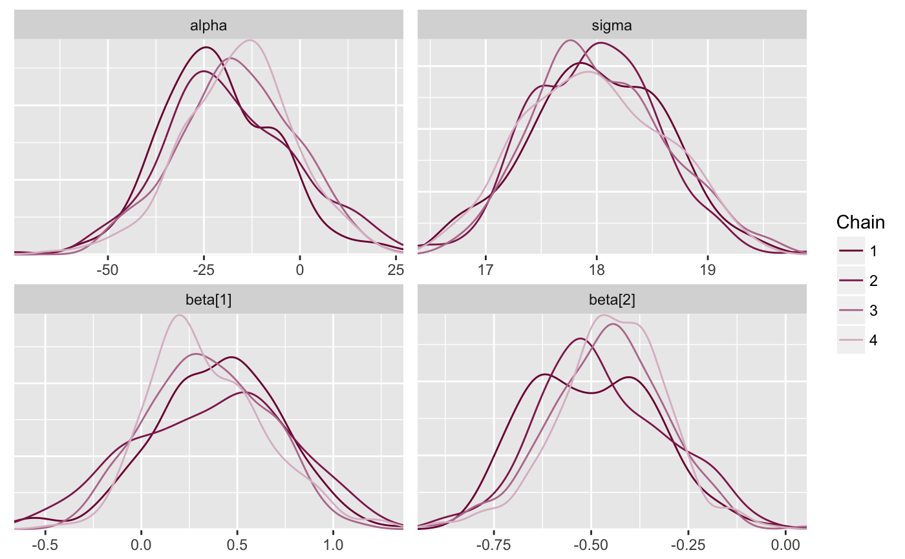
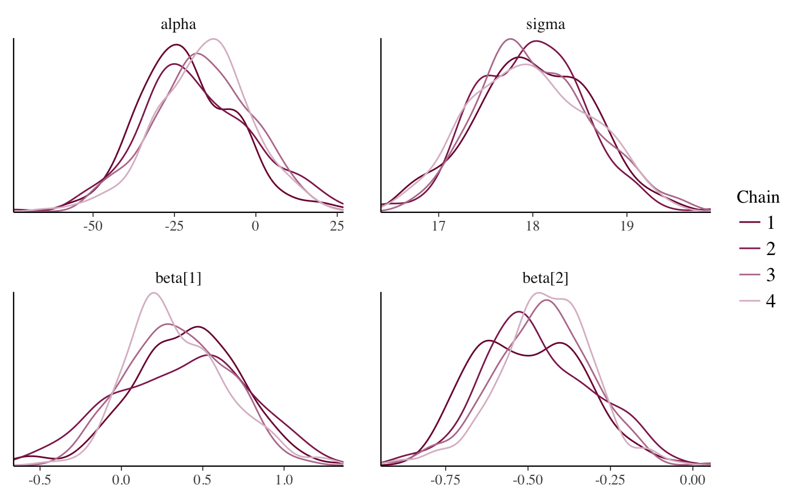

Default bayesplot plotting theme
The theme_default function returns the default ggplot
theme used by the bayesplot plotting functions.
After loading the bayesplot package, this theme will be the default for
all graphs made with ggplot2. See the Details section,
below.
theme_default(base_size = getOption("bayesplot.base_size", 12), base_family = getOption("bayesplot.base_family", "serif"))
Arguments
| base_size, base_family | Base font size and family (passed to
|
|---|
Value
A ggplot theme object.
Details
After loading bayesplot, if you subsequently change the
default ggplot2 theme (i.e., by calling
theme_set or loading a different package that changes
the theme) then bayesplot will use that theme instead. To change back
to the default bayesplot theme use bayesplot::theme_default() as
the argument to theme_set.
See also
bayesplot-helpers for a variety of convenience functions,
many of which provide shortcuts for tweaking theme elements after creating
a plot.
bayesplot-colors to set or view the color scheme used
for plotting.
Examples
class(theme_default())#> [1] "theme" "gg"# plot using the default theme ggplot2::theme_set(theme_default()) x <- example_mcmc_draws() mcmc_hist(x)#># change the default font size and family ggplot2::theme_set(theme_default(base_size = 8, base_family = "sans")) mcmc_hist(x)#># use one of the themes included in ggplot2 ggplot2::theme_set(ggplot2::theme_gray()) mcmc_dens_overlay(x)# change back to bayesplot default theme ggplot2::theme_set(bayesplot::theme_default()) mcmc_dens_overlay(x)